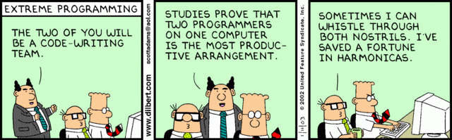

What is Pair Programming?
Pair programming is a technique used by developers to collaborate with each other on their code.
Usually, pairs of programmers will assume the roles of "driver" and "navigator".
With pair programming, developers can work together to establish a strategic direction for
their projects and review each others' code.

Why is Pair Programming Important to DBC?
Pair programming is important to DBC because working together enhances learning. By working on
pair programming projects, DBC students expand on their lessons and learn version control. Also
it is useful to gain practice in the art of pair programming in DBC because it prepares "boots"
for the real world working environment of software development. Pair programming is used
widely by software developers, so it is useful to gain feedback while at DBC for good
pair programming practice
Compare Driver and Navigator
The driver is the person who is on the keyboard directly typing in code.
The navigator is the person who is feeding the driver suggestions at regular
points about what their next step should be, leading both driver and navigator,
to their prefered destination.
A useful analagy is to think of both roles as the driver and navigator
of a rally car. The driver is the person behind the wheel steering the
car. The naviagtor is the person holding the map, and feeding the
driver suggestions and instructions about what is coming up next!
The roles are not too strict though in the sense that the navigator doesn't
do all the talking and the driver all of the listening. Rather it is more
of a fluid conversation that takes places, where idea's are bounced back
and forth. The naviagot is responsible for the overal direction of the code
though!